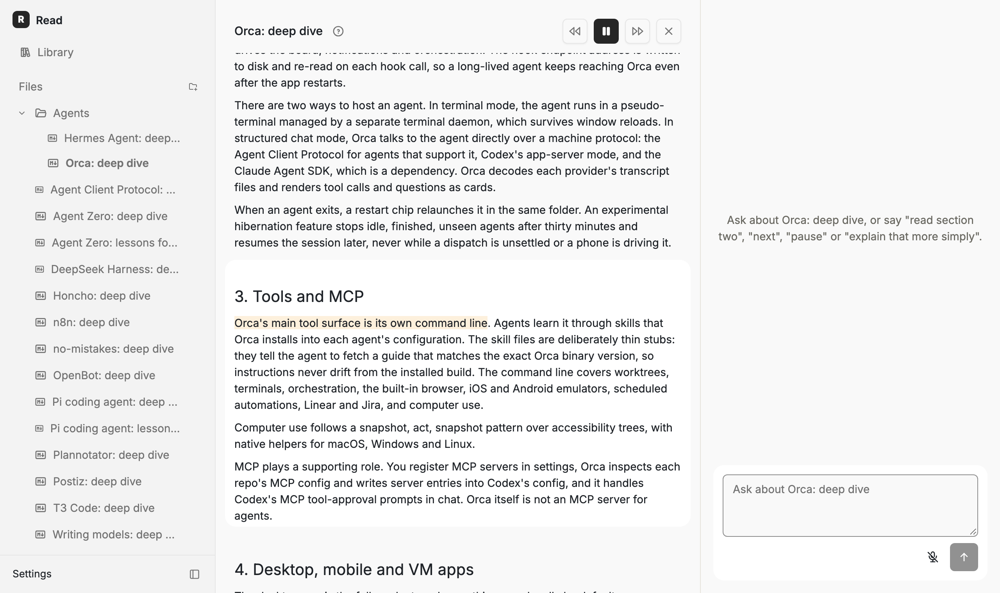

Read is where you read files with a voice beside you. Your folders and files are on the left. Open one and Read reads it aloud, sentence by sentence, with the sentence you hear highlighted. Talk to it while it reads: tell it to pause, skip, go back to a section, or explain a part more simply.

Read uses a handful of words with one meaning each. They appear on the page, in its answers and in this guide.
The library is a folder on your machine. Its folders and files show on the left, folders first. Read opens Markdown, plain text and PDF files; anything else in the folder is left out. To group files, make a folder with the folder button next to Files and drag files onto it, or use a file's "..." menu to rename it in place or move it to a folder. A file keeps its place and its conversation when it moves. Files added to the folder on disk show up too.
Each file is split into sections. In a Markdown file a section is a heading (H1 to H4) and the text under it. A PDF has one section per page. A plain text file is one section.
Numbered headings, such as "6. Interfaces", can be asked for by number.
The text of each page, in reading order. Its title comes from the PDF.
Read from the top, sentence by sentence.
Press the play button at the top, or click a heading to read from there. Read says the heading, then each sentence under it, then moves to the next section. The sentence you are hearing is highlighted: this is the read-along. Code blocks are skipped, and a table is read one row at a time, each cell with its column name.
Pause, and Read keeps its place: the sentence you were hearing. Open the file again another day and it starts from the section you last reached.
Turn on the microphone in the message box and talk, or type. Read listens for reading commands: pause, carry on, repeat, next, go back, start from the top, what sections are there, and "read" or "go to" with a section's name or number. It also opens a file you name, such as "open the Orca file". These act at once, without a model, the same way every time.
When two sections fit what you said, Read asks which one, and "the first one" or "the second one" picks it. A question that names a section, such as "what does section six say about Slack?", is never a command: it goes to the agent.
Anything that is not a reading command goes to the agent, a model that has the open file in front of it. It answers in one to three short spoken sentences, from the file's text only. If the file does not cover it, it says so. Ask it to explain a part more simply, or like you are five, and it does that from the file too.
The answer is spoken as it is written. When the agent moves the reader, for example after "read me the part about dispatches", it says a few words first and the reading starts when it has finished speaking. Type a question while Read is reading and the answer comes as text, and the reading carries on.
What you said and the replies are kept with the file, and shown again when you open it.
The agent sees the sections around the reading, and can look the rest up without moving the reader.
Reading commands still work. A question gets one line saying no model is set up.
Everything the page does is an Action, and the same Actions are served over MCP at /mcp. Another app, such as Talk, can list the files, open one, move the reader or look something up in a file. It connects once, and you approve it.
| Action | Effect | What it does |
|---|
Read runs on your machine. It needs Node 22.19 or later, a speech server with Whisper and Kokoro for voice, and a model for questions, such as Gemma on Ollama. It runs on this machine only and opens straight to your files, with no sign-in.
npm install
npm run build
npm start # http://127.0.0.1:3940
| Setting | What it does |
|---|---|
READ_FILES_DIR | The library folder |
PORT | The port, 3940 unless set |
KIT_MODEL | The model, such as local/gemma4:26b-a4b-it-qat |
KIT_OPENAI_BASE_URL | The model server, such as Ollama's /v1 |
VOICESTUDIO_URL | The speech server |
READ_VOICE | The voice it reads in |
The answers to what people ask most. Open any of them.